The catenoid is formed by revolving the catenary  around an axis. Its parametric equations are given by:
around an axis. Its parametric equations are given by:

Now:


Their cross product is:

The norm of their cross product is:

The unit normal vector is:

Going back,
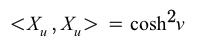
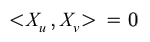
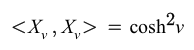
Therefore, the first fundamental form coefficients are:
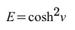
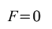
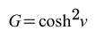
Now:
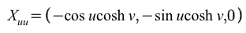
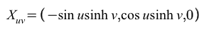
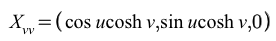
and
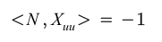
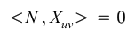
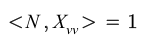
Therefore, the second fundamental form coefficients are:
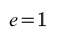
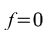
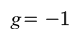
The Gaussian Curvature is:
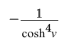
Since the catenoid is a minimal surface, the mean curvature is H=0.
Visualization of vectors on the catenoid:
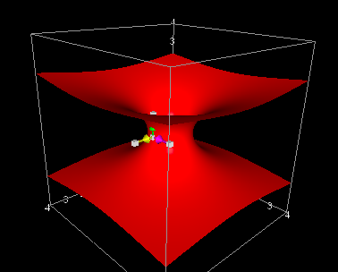